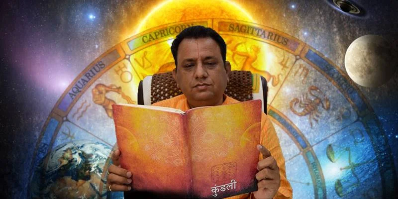

Malavya Yog
Based on the placement of Venus or Moon, having this yog in your Kundali can lead you to beauty and creativity. If you are an artist, this yog can empower you with great success and the ability to make the right decisions.
Bhadrak Yog Based on the placement of Mercure or Moon, this yog can lead you to intelligence and confidence. Having this yog in your Kundali can multiply your chances of success in business or academics.
Mahalaxmi Yog Based on the placement of Jupiter, this yog can lead you to an abundance of wealth. If you are suffering from money-related problems, having this yog in your Kundali can turn your life around.
Amala Yog Based on the joint placement of the moon with certain auspicious planets, this yog can lead you to a life full of fame and glory.
Bad
Chandaal Yog Based on the placement of Rahu or Ketu with Jupiter, this yog casts a bad effect on education, wealth, and character. The turn of this yog in your life can also lead to respiratory and stomach problems.
Grahan Yog Grahan Yog
Based on the combined placement of Rahu or Ketu with Moon, or Rahu with Sun, this yog can lead one to extreme mental pain and cause suffering to their parents as well.
Vish Yog Vish Yog
Based on the placement of Saturn and Moon, this yog can make one’s life like a living hell. The presence of this yog makes one’s life slow-moving and extremely painful.
Daridra Yog Daridra Yog
Based on multiple combinations of planet placements, this yog can turn a millionaire into a beggar. The presence of this yog can bring a sudden downfall in one’s life.
Get as many questions answered by guruji in the stipulated time period
Find out the horoscopic reasons behind certain events in your life
Get to know the remedies to calm your malefic planets
Get to know the karmas that can positively impact your life

Acharaya Ramkumar Shastri
Our Acharaya Ramkumar Shastri ji has been in the study of astrology for the past 25 years. He has analysed thousands of Kundalis and Yogas throughout his practice and has helped countless people by guiding them toward the right karmas that can help bring calmness to their lives. You can also get his guidance on your Kundali and the possibilities of your life.